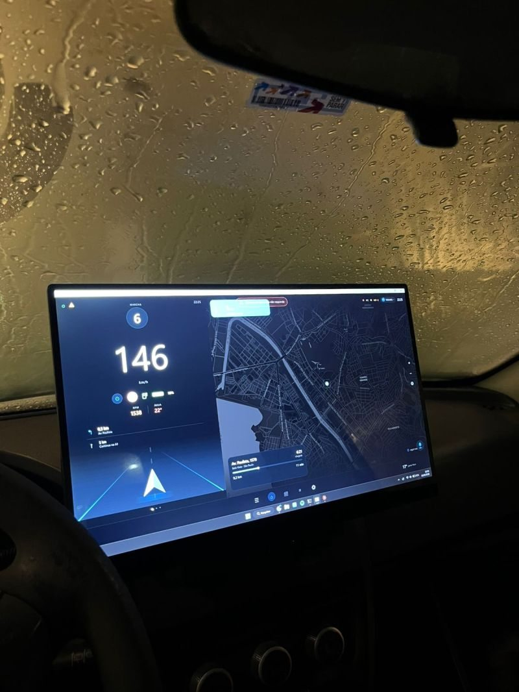
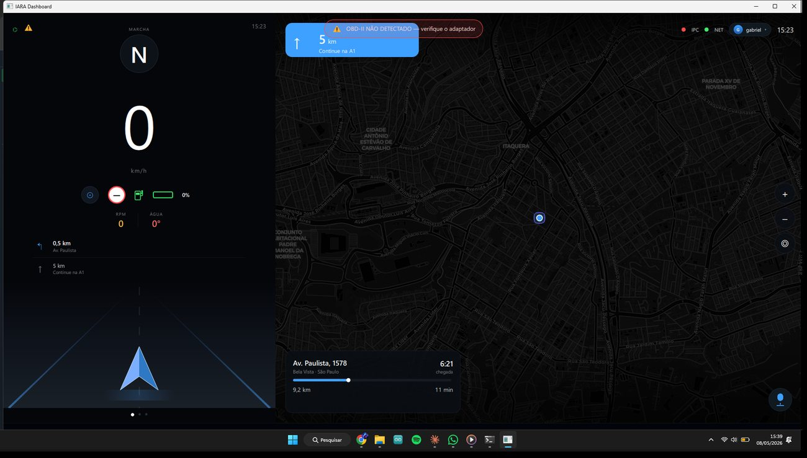
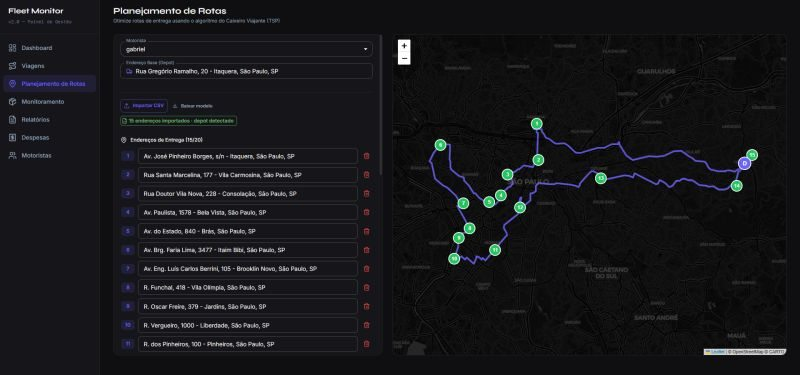
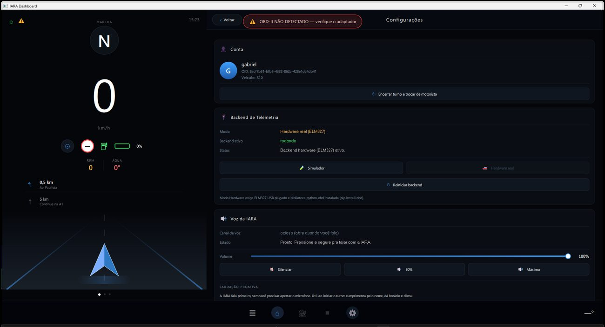
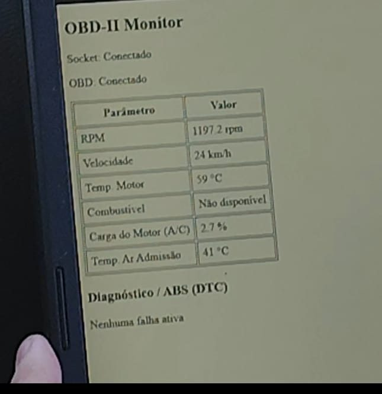
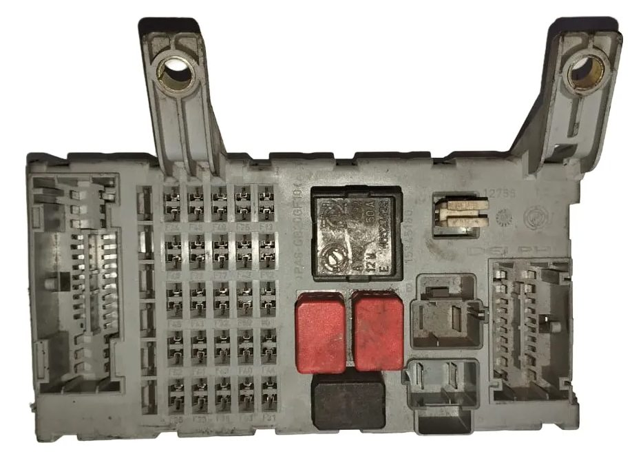
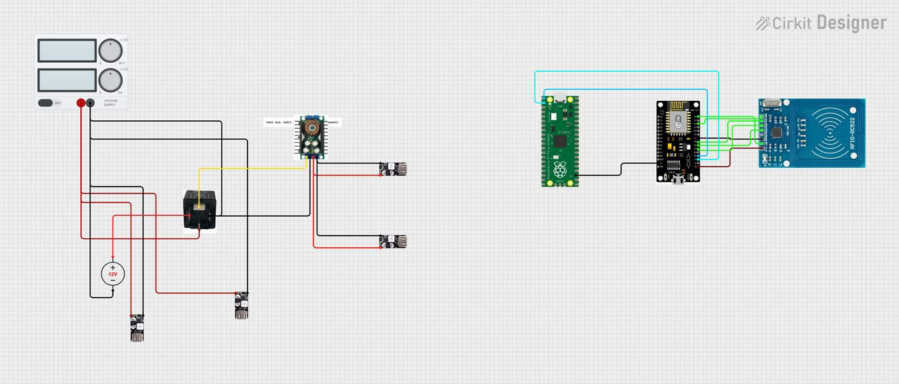

I.A.R.A. — telemetria e gestão de frota
Um dono de frota de veículos leves em São Paulo sabia onde os carros estavam, porque tinha rastreador e tag de pedágio, mas não conseguia provar nada depois: sem histórico de trajeto, notas de combustível chegando por foto no WhatsApp e nenhuma resposta quando o cliente perguntava sobre emissão de CO₂. O problema não era falta de tecnologia, era falta de registro.
São três subsistemas. No veículo, um Raspberry Pi 5 preso ao painel lê a central eletrônica por OBD-II com adaptador ELM327, coletando RPM, velocidade, temperatura e carga do motor; os dados saem do coletor em Python e chegam à interface em C++ por FlatBuffers sobre TCP local, sem cópia. Na nuvem, backend em Python com Flask e Socket.IO na AWS, com EC2 e DynamoDB, alimentando o painel do gestor em React com mapa ao vivo e relatório em PDF de trajeto, custo, eficiência e emissão. No celular, o motorista aponta para o QR Code da nota fiscal ao abastecer, o app confere se ela é legítima e arquiva com a foto — o WhatsApp sai do fluxo.
A parte que mais me ensinou foi a assistente de voz. Ela roda atrás de um proxy próprio que isola a chave da API e injeta o estado atual do veículo antes de cada pergunta, então ela sabe o RPM, a temperatura e as falhas ativas na hora em que o motorista fala. Também aceita comandos que disparam ferramentas no proxy, como alternar entre o hardware real e o simulador de bancada. O mapa é MapLibre, com geocodificação reversa pelo Overpass para descobrir rua e limite de velocidade, e clima pelo Open-Meteo.
Meu papel: arquitetura do sistema e estruturação da base de código, camada embarcada no veículo e leitura OBD-II, com a definição do escopo técnico junto à equipe de seis pessoas.
- Latência de voz, depois da reescrita em C++400 → 30 ms
- Memória residente1 GB → 200 MB
- Quadro de telemetria320 → 96 bytes
- Dois meses em operação91.825 viagens
- Pontos de telemetria guardados44.207
A validação foi feita em dois veículos, com quatro amostras a cerca de 3.000 RPM comparadas ao taquímetro do painel. O caso que não funcionou também entrou no relatório: um carro anterior à normatização brasileira, com incompatibilidade de protocolo.
Ver repositório ↗





